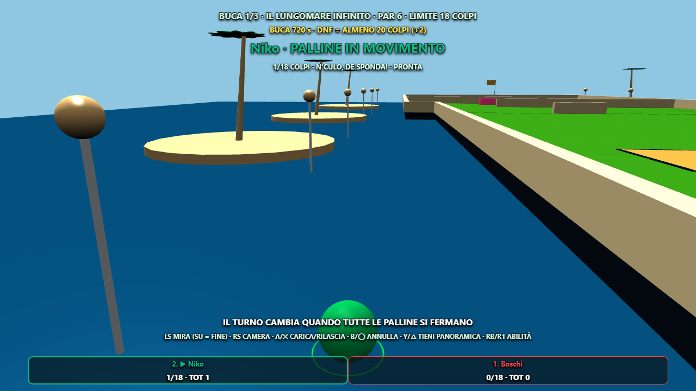
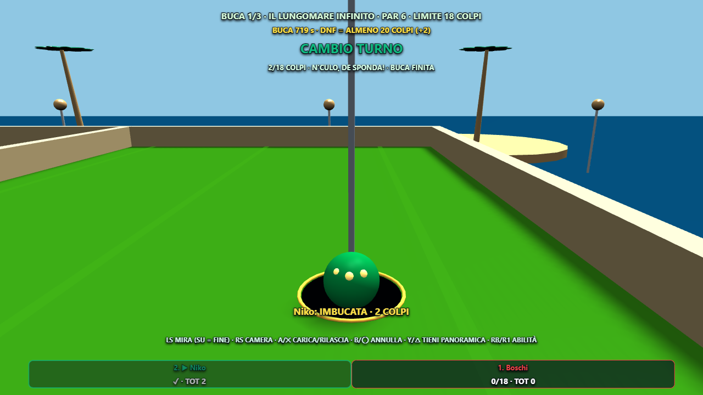

Minigolf · Gravità e imbucata
Caduta naturale dai bordi e tra piani a quote diverse, atterraggio con piccolo rimbalzo e ritorno alla partenza della buca quando la palla esce. I colpi restano conteggiati; la penalità prevista è conservata.
La palla lenta sul bordo viene accompagnata dentro l’apertura. I tiri troppo veloci e i passaggi a un’altra quota non vengono catturati. La palla scende visibilmente nella coppa.

Caduta verificata nel renderer reale: la palla perde quota prima di tornare alla partenza.
Imbucata: breve discesa nella coppa, con un solo accredito del risultato.Scenari preparati per isolare caduta e imbucata; fisica, renderer e conteggio del gioco reale. Verifiche eseguite